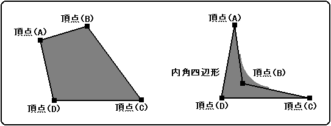
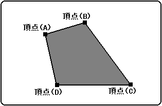
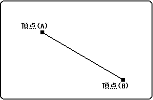

★HARDWARE Manual
★VDP1ユーザーズマニュアル
★HARDWARE Manual
★VDP1ユーザーズマニュアル
▲戻る｜
進む▼
VDP1ユーザーズマニュアル/第１章 VDP1の機能
●ノンテクスチャパーツ
- ノンテクステャパーツは元絵を必要としないため、テクステャパーツと異なり、VDP1からVRAMをひんぱんにアクセスしません。
- ◆ポリゴン
- 四角形を描画します。4つの頂点を指定し、4点で囲まれた平面内を単色で塗りつぶします。4点は任意に指定できます。
カラーはノンテクスチャカラーで指定します。
ポリゴンは斜めのラインとして描画します。このとき、ピクセルの欠落がでないように穴埋めします。そのため2度書きのピクセルが発生するので、色演算の半透明処理等は結果が保証されません。
内角四角形も描画できます。ただし、塗りつぶすときはラインで描画するので、四角形の外にはみ出すこともあります。
図1.7 ポリゴン

- ◆ポリライン
- 直線(ライン)を4本接続して四角形を描画します。4つの頂点を指定し、順に頂点を接続するラインを描画します。ポリゴンとは異なり、4点で囲まれた平面を塗りつぶしはしません。4点は任意に指定できます。
カラーはノンテクスチャカラーで指定します。
ラインを4本描画するので、ラインの重なる頂点付近は、ピクセルを2度書きします。そのため、色演算の半透明処理等は結果が保証されません。
図1.8 ポリライン

- ◆ライン
- 2点座標間に、単色でラインを描画します。カラーはノンテクスチャカラーで指定します。
図1.9 ライン

▲戻る｜
進む▼
★HARDWARE Manual
★VDP1ユーザーズマニュアル
Copyright SEGA ENTERPRISES, LTD., 1997